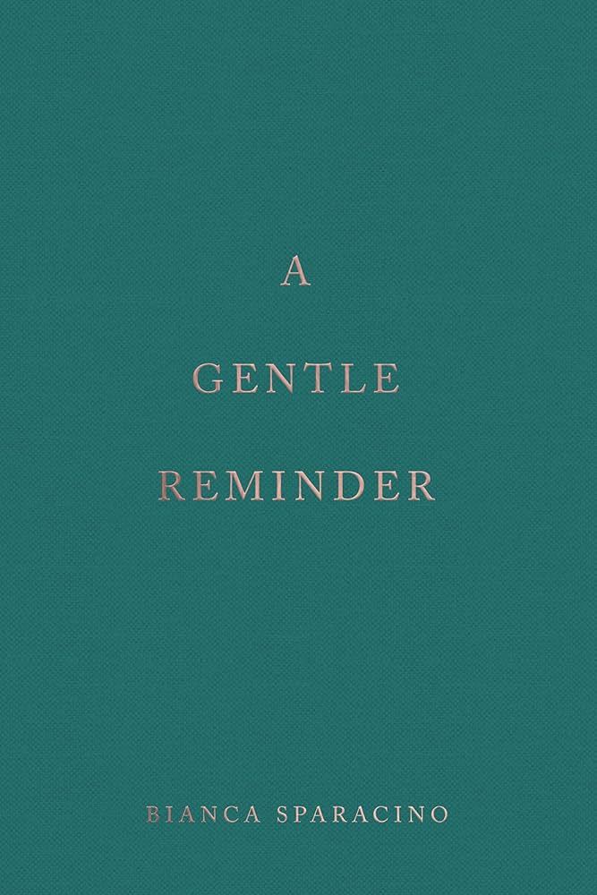

My favorite food of all time is banh bot loc. It is Vietnamese tapioca dumpling filled with pork, shrimp, and mushroom. I like it dip it in nuoc nam, which is fish sauce.
My favorite food of all time is banh bot loc. It is Vietnamese tapioca dumpling filled with pork, shrimp, and mushroom. I like it dip it in nuoc nam, which is fish sauce.Last May-June, I went on a trip to South Korea and Japan with my childhood best friend. We had planned this trip for quite a while and had decided that post-graduation was the perfect time to make it happen. At first, things felt overwhelming because we were jetlagged and unfamiliar with the langauge. However, the trip was an overall success. We were able to navigate the cities smoothly with our limited Korean and Japanese from watching kdramas and anime, we ate lots of good foods, and we had an amazing time exploring the many fashion and beauty products.
If I could have a pet, it would be ..
My favorite restaurant is JOY YEE. It's located in Chinatown, Illinois. The first bite was just right. I wouldn't say it's the "best" food that I've every had, but everything about the flavoring felt so comforting and suitable to my taste. I've been back a few times and every time I order a bone marrow soup and a short rib with garlic fried rice. I love that they make basic recipes feel so elevated. The menu selection is probably the largest one that I see, with over 200 items. My favorite part of Joy Yee is that they have a range of cuisines -- from Vietnamese to Chinese to Korean, this makes it easy to be able to try different kinds of foods!
My favorite food of all time is banh bot loc. It is Vietnamese tapioca dumpling filled with pork, shrimp, and mushroom. I like it dip it in nuoc nam, which is fish sauce.
| The Defining Decades: Why Your Twenties matter-and how to make the most out of them now | A Gentle Reminder | How to Stop Worrying and Start Living | Atomic Habits: An Easy & Proven Way to Build Good Habits & Break Bad Ones |
|---|---|---|---|
 |
 |  |
 |
| Meg Jay, PhD | Bianca Sparacino | Dale Carnegie | James Clear |
| Meg Jay, a clinical psychologist and professor at the University of Virginia, explains why and how the years between your 20s-30s draw out the rest of your life. | Bianca Sparacino inlcudes a collection of poems to remind people that they should embrace the messiness and beauty of the world and themselves. | Dale Carnegie talks about how anxiety limits people and tools they can use to have a happier and more fulfilled life. | James Clear explains the science behind habits and provides a guide on how people can change their habits to help them become better versions of themselves. |